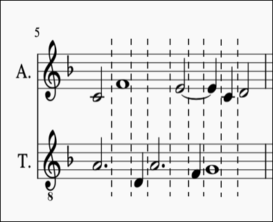
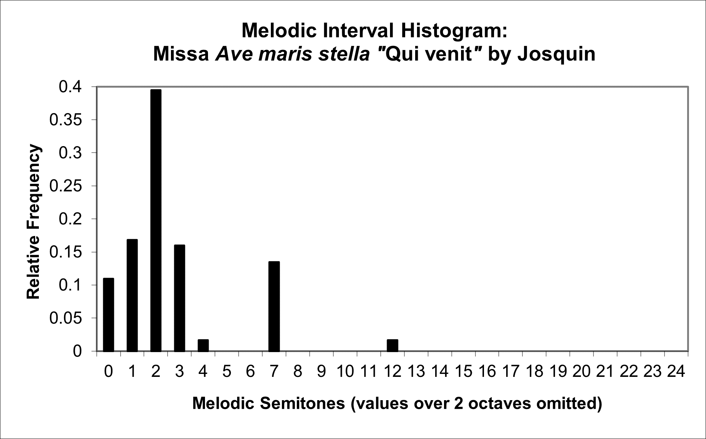
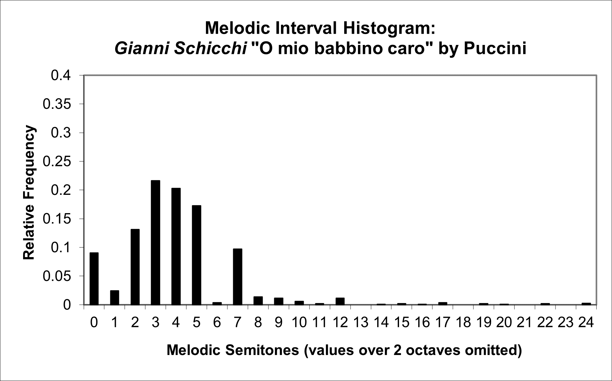
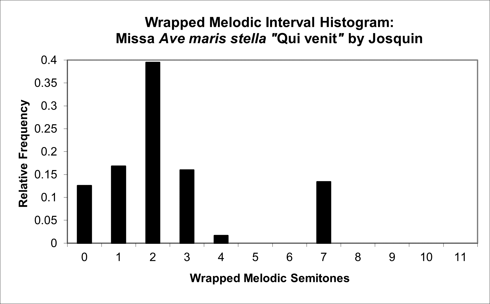
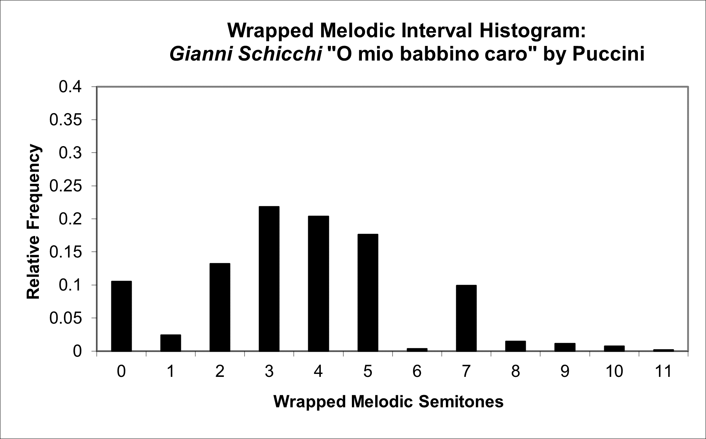
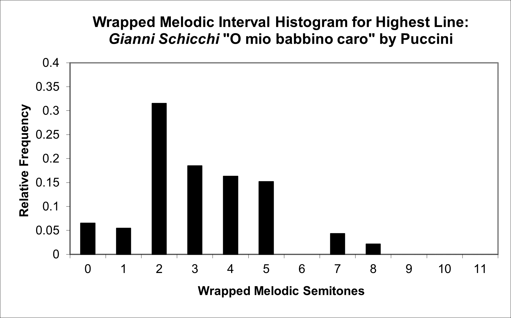
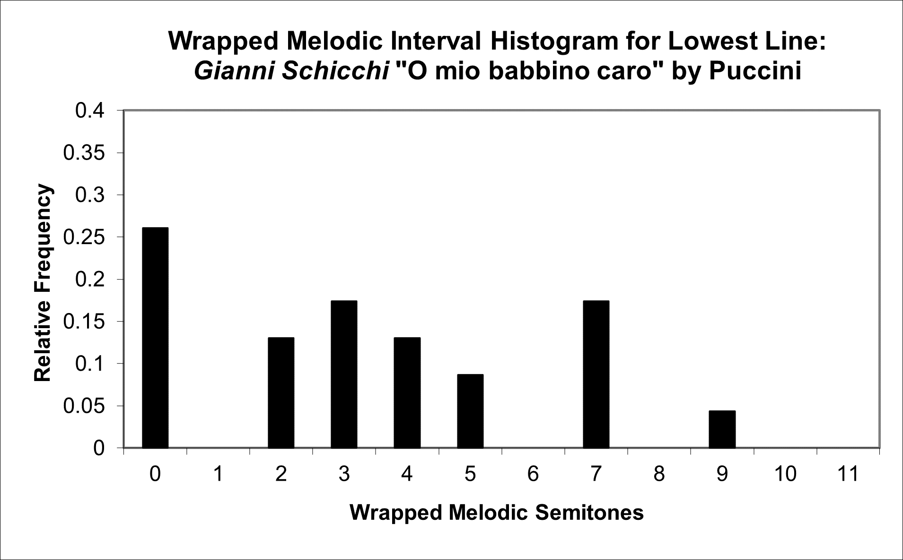

| Feature Explanations: Melody and Melodic Intervals |
GENERAL NOTES
Although features based on overall pitch statistics are often meaningful and useful, they do not reflect information relating to the order in which pitches occur. Melody is a very important part of how people in many musical traditions hear and think about music, so features based on such sequential information are needed to complement features based on overall pitch statistics. Fortunately, ample theoretical work has been done that can be taken advantage of when designing melodic features, ranging from compositional resources like manuals on writing Baroque counterpoint to more general analytically-formulated ideas like melodic contour.
Unfortunately, arriving at algorithms that can automatically detect and partition musical phrases and melodies in the general way needed to be applicable to diverse types of music is a far from trivial task. Although expert humans can perform such tasks relatively easily for specific types of music, automatic systems for performing them have still achieved only limited general success, particularly in cases where the notes in a phrases are shared across voices. So, although a phrase detection pre-processing system would make many potentially useful melodic features accessible, only simple systems that make broad approximations are currently available for doing so.
What one can do fairly easily, however, is collect basic statistics about melodic intervals and melodic motion. Although such statistics may be relatively rudimentary compared to expert melodic analyses, they can still potentially be very effective in performing meaningful music classifications. For example, one can extract features related to melodic contour by making a few naive (but often effective in a large-scale feature-based context) basic assumptions, such as the assumptions that all notes belonging to a phrase will be on the same MIDI track and channel (i.e. voice), or that phrases will each follow the overall shape of a basic concave or convex arc. Although such assumptions are clearly false in the general case, and are certainly not acceptable for any wide-ranging detailed analytical framework, they do make it possible to extract some potentially powerfully discriminating higher-level melodic features without needing a sophisticated phrase detection system.
Sequences of note onset slices serve as a useful intermediate abstraction for calculating many of the features extracted by jSymbolic (including both melodic and other feature types). A new slice is created whenever a new pitched note attack occurs in the music, and each slice consists of a list of all pitches sounding in the slice. The figure below uses dotted vertical lines to show sample slice segmentations of this kind. In this example, the first slice consists of a set of two pitches: A3 and C4. Note onset slices can be calculated separately for each MIDI track and channel (i.e. individually for each voice), or they can be calculated across all voices simultaneously. jSymbolic also allows slices to be calculated to include notes still sounding from previous slices, or can alternatively calculate slices that only includes pitches starting at the beginning of the current slice, as most appropriate for the given context. For example, for the figure below, the second slice could include the A3 from the preceding slice (since the A3 is still sounding at the begriming of the second slice), or it could alternatively exclude this note (since the A3 started on the first slice rather than the present second slice, or alternatively because it only lasts for a small fraction (1/4) of the second slice), all depending on the particular type of note onset slice being used. The choice of best note onset slice variety to use can vary depending on the nature of the particular feature it is being used to calculate.

One of the general advantages of using note onset slices is that they allow one to deal with the problem that, in practice, notes annotated as sounding simultaneously in a score are often instead encoded in a MIDI file such that they begin one-after-the-other with slight time offsets (due either to live encodings of human MIDI performances or to the "human playback settings" used by many score editing software packages when they save MIDI files). Such non-simultaneities can cause significant problems during automatic feature extraction if not treated carefully. jSymbolic's note onset slice data structures allow it to address this problem by merging notes with very small rhythmic offsets into the same slice, so that analytical processing applied to slices will perceive such notes as if they occurred simultaneously (the jSymbolic code allows customization of the details of how this simultaneity pre-processing is done, but experiments have found the default approach to be effective in general).
From the specific perspective of melodic features (but not necessarily other feature types; see the section of the manual on n-gram sequences for a more general and more detailed discussion of note onset slices and how jSymbolic implements them), one ideally would like each slice to contain no more than one note for each voice (MIDI track and channel). Of course, multi-voice music can contain multiple notes per slice, and even individual polyphonic instruments such as pianos can in fact sound multiple pitches simultaneously on the same MIDI track and channel (voice), all of which can create ambiguity in determining which note is the "melodic" note for a given slice (i.e. it can be ambiguous in the general case which pitches are part of the melody and which are non-melodic accompaniment). As a useful approximation when calculating slices, jSymbolic adopts the convention that, specifically for the melodic version of its note onset slices, if a given note onset slice on a given MIDI track and channel (voice) contains multiple pitches, then only the highest-pitch note in the slice is counted for the purpose of melody calculations. Also, for the melodic version of the note onset slices, if the highest note is sustained from one slice to the next, and is still the highest note in the second slice, then this is treated as if there is no change in melody, even if lower pitches in the same track and channel change. A series of melodic intervals can then be calculated for each voice by comparing the melodic note in each slice with the last melodic note found in the prior slice. Similar bassline-oriented processing can also be done by only considering the lowest note in each slice.
As is the case with other types of features, histograms can provide a useful starting point for constructing features based on melody and melodic intervals, both directly as feature vectors themselves and as intermediate representations for calculating derivative features (please consult the section of the manual on overall pitch statistics for a brief general introduction to histograms). The particular melodically-oriented histograms discussed in this section are all based on melodic intervals: sometimes looking at absolute melodic intervals and other times looking at melodic intervals wrapped by octave; sometimes across all lines and other times focusing on individual lines; and sometimes considering all melodic intervals, other times considering only those that are rising and other times only considering those that are falling. These histograms are used as the basis for constructing some (but certainly not all) of the features described in this section of the manual.
Let us begin by introducing the basic melodic interval histogram. Each bin of this histogram represents a different melodic interval, and is labeled with an index indicating the number of semitones in the interval, starting with 0 (corresponding to repeated notes). The histogram is populated by going through the music under analysis, voice by voice (i.e. by MIDI track and channel), and noting the interval (in number of semitones) between the melodic note in each note onset slice (for that voice only) and the melodic note in the preceding slice (for that voice only). The magnitude of each histogram bin indicates the aggregated fraction of such melodic intervals that correspond to the bin's particular melodic interval. The direction of the interval (i.e. up or down in pitch) is ignored in the base form of this histogram and all features derived from it. This histogram clearly has a few limitations, of course. For example, it treats all voices equally, even though the highest voice of a piece often carries the most significant melodic information in many types of music (but certainly not all). This is, however, a quick and easy approach that has been found experimentally to often be helpful in discriminating between classes.
The two figures below show the melodic interval histograms for a Josquin mass movement and a Puccini aria (although each melodic interval histogram actually has 128 bins, corresponding to the 128 MIDI pitches and associated possible pitch difference values, for simplicity only the first 25 bins are shown here, since neither piece has any melodic intervals greater than two octaves). Note, on the one hand, that the melodic intervals used by Josquin correspond primarily to repeated notes, minor seconds, major seconds (especially), minor thirds and perfect fifths, along with just a few melodic major thirds and octaves. There are no melodic fourths, tritones, sixths, sevenths or intervals greater than an octave. Puccini, on the other hand, includes at least a few melodic intervals of every variety below an octave as well as several of the melodic intervals between an octave and two octaves. So, Puccini clearly uses a broader range of melodic intervals than Josquin, as one would of course expect.


jSymbolic uses this kind of base melodic interval histogram to also construct a wrapped melodic interval histogram, which is a histogram where melodic interval bins separated by octaves are counted together (such that, for example, melodic intervals of a major second, major ninth, etc. are aggregated together into a single bin). Note how it is not possible to tell from these wrapped histograms whether melodic intervals over of an octave or more are present, but they can highlight information more directly about the overall types of intervals present. The wrapped melodic interval histogram for the same Josquin and Puccini music discussed above are shown below: note that the presences of melodic intervals of an octave or higher in the Puccini aria cause his wrapped histogram to have a range of (slightly) different ratios than his original melodic histogram, but the only difference between the two Josquin histograms is that the wrapped version combines repeated notes with melodic octaves (since there are no higher melodic intervals in the Josquin).


A general issue with both the wrapped and unwrapped versions of the melodic interval histogram presented above is that melodic information is combined across all voices (including instrumental accompaniment in the Puccini aria, for example), which can obscure what is happening in individual lines; this highlights the need for alternatives to the melodic interval histogram that focus more on specific lines. Since the most salient information on melody can often be found in the highest voice (although this of course varies with musical tradition, style and instrumentation), jSymbolic also calculates a wrapped melodic interval histogram for highest line, which is much like wrapped melodic interval histogram, except that it only considers the voice (MIDI track and channel) with the highest average pitch. Melodic intervals in other voices are ignored for the purposes of this histogram. Similarly, jSymbolic calculates a wrapped melodic interval histogram for lowest line, which ignores melodic intervals in all but the MIDI track and channel (voice) with the lowest average pitch. This latter histogram can be potentially useful for highlighting particularly harmonically-influenced melodic motion (again, depending on the particular kind of music).
Examples of these two types of histograms are shown below, for the same Puccini aria analyzed above. Note how the two histograms are quite different from each other and from the overall wrapped melodic interval histogram shown above, as one might expect. For example, the highest (soprano) line of the Puccini opera tends to emphasize stepwise motion (especially major seconds) and melodic thirds, while the lowest line emphasizes repeated notes, perfect fifths, thirds and (to a lesser extent) perfect fourths. These kinds of differences highlights the potential utility of generating multiple different kinds of melodic histograms, as jSymbolic does.


It can also sometimes be useful to focus only on rising or falling melodic intervals, so jSymbolic therefore also includes versions of each of the wrapped histograms introduced above that, in the first case, filter out all falling intervals and, in the second case, filter out all rising intervals. This results in the following histograms also calculated by jSymbolic: wrapped melodic interval histogram - rising intervals only, wrapped melodic interval histogram - falling intervals only, wrapped melodic interval histogram for highest line - rising intervals only, wrapped melodic interval histogram for highest line - falling intervals only, wrapped melodic interval histogram for lowest line - rising intervals only and wrapped melodic interval histogram for lowest line - falling intervals only.
A number of features are also based on melodic arcs, which are also calculated using note onset slices. Such arcs are considered to either: 1) start (inclusively) with the note at the bottom of a melodic trough, continue past the next melodic peak note and then end (inclusively) with the note at the following trough; or 2) start (inclusively) with the note at the top of a melodic peak, continue past the next melodic trough note and then end (inclusively) with the note at the following peak. Related melodic arc features include all arcs of both these types in their calculation, and melodic unisons internal to an arc are counted and passed through without interrupting the arc. Melodic-half arcs, in contrast, consist only of each trough-to-peak and each peak-to-trough (separately), but are otherwise treated similarly.
As a final note, all notes occurring on MIDI Channel 10 are ignored when calculating all of the features described in this section. This is because the "pitch" values on Channel 10 correspond to (mostly unpitched) percussion instruments, not to actual pitches.
JSYMBOLIC FEATURE CATALOGUE (MELODY AND MELODIC INTERVALS SECTION)
- M-1 Melodic Interval Histogram: A feature vector consisting of the bin magnitudes of the melodic interval histogram described above. Each bin corresponds to a melodic interval, and the bin index indicates the number of semitones comprising the interval associated with the bin (there are 128 bins in all). For example, bin 0 corresponds to repeated pitches, bin 1 to a melodic interval of one semitone, bin 2 to a melodic interval of 2 semitones, etc. The magnitude of each bin is proportional to the fraction of melodic intervals in the piece that are of the kind associated with the bin (this histogram is normalized). Rising and falling intervals are treated as identical. Melodies are assumed to be contained within individual MIDI tracks and channels, so melodic intervals are found separately for each track and channel before being combined in this histogram. If a given note onset slice on a given MIDI track and channel contains multiple pitches, then only the highest pitched note in the slice is counted for the purpose of melody calculations. Also, if the highest note is sustained from one note onset slice to the next, and is still the highest note in the second slice, then this is treated as if there is no change in melody, even if lower pitches in the same track and channel change. It is also assumed that melodies do not cross MIDI tracks or channels (i.e. that they are each separately contained in their own track and channel). Only pitched notes are considered, so all notes on the unpitched MIDI Channel 10 are ignored.
- M-2 Wrapped Melodic Interval Histogram: A wrapped feature vector consisting of the bin magnitudes of the Melodic Interval Histogram described above. Entries for melodic intervals over an octave are amalgamated (e.g. 2nds and 9ths are combined). Each bin corresponds to a melodic interval, and the bin index indicates the number of semitones comprising the interval associated with the bin (there are 12 bins in all). For example, bin 0 corresponds to repeated pitches (and octave multiples), bin 1 to a melodic interval of one semitone (and octave multiples), bin 2 to a melodic interval of 2 semitones (and octave multiples), etc. The magnitude of each bin is proportional to the fraction of melodic intervals in the piece that are of the kind associated with the bin (this histogram is normalized). Rising and falling intervals are treated as identical. Melodies are assumed to be contained within individual MIDI tracks and channels, so melodic intervals are found separately for each track and channel before being combined in this histogram. If a given note onset slice on a given MIDI track and channel contains multiple pitches, then only the highest pitched note in the slice is counted for the purpose of melody calculations. Also, if the highest note is sustained from one note onset slice to the next, and is still the highest note in the second slice, then this is treated as if there is no change in melody, even if lower pitches in the same track and channel change. It is also assumed that melodies do not cross MIDI tracks or channels (i.e. that they are each separately contained in their own track and channel). Only pitched notes are considered, so all notes on the unpitched MIDI Channel 10 are ignored.
- M-3 Wrapped Melodic Interval Histogram - Rising Intervals Only: A feature vector consisting of the bin magnitudes of the Wrapped Melodic Interval Histogram described above, but where falling intervals are ignored (repeated pitches are counted). Entries for melodic intervals over an octave are amalgamated (e.g. 2nds and 9ths are combined). Each bin corresponds to a melodic interval, and the bin index indicates the number of semitones comprising the interval associated with the bin (there are 12 bins in all). For example, bin 0 corresponds to repeated pitches (and octave multiples), bin 1 to a melodic interval of one semitone (and octave multiples), bin 2 to a melodic interval of 2 semitones (and octave multiples), etc. The magnitude of each bin is proportional to the fraction of rising melodic intervals in the piece that are of the kind associated with the bin (this histogram is normalized). Melodies are assumed to be contained within individual MIDI tracks and channels, so melodic intervals are found separately for each track and channel before being combined in this histogram. If a given note onset slice on a given MIDI track and channel contains multiple pitches, then only the highest pitched note in the slice is counted for the purpose of melody calculations. Also, if the highest note is sustained from one note onset slice to the next, and is still the highest note in the second slice, then this is treated as if there is no change in melody, even if lower pitches in the same track and channel change. It is also assumed that melodies do not cross MIDI tracks or channels (i.e. that they are each separately contained in their own track and channel). Only pitched notes are considered, so all notes on the unpitched MIDI Channel 10 are ignored.
- M-4 Wrapped Melodic Interval Histogram - Falling Intervals Only: A feature vector consisting of the bin magnitudes of the Wrapped Melodic Interval Histogram described above, but where rising intervals are ignored (repeated pitches are counted). Entries for melodic intervals over an octave are amalgamated (e.g. 2nds and 9ths are combined). Each bin corresponds to a melodic interval, and the bin index indicates the number of semitones comprising the interval associated with the bin (there are 12 bins in all). For example, bin 0 corresponds to repeated pitches (and octave multiples), bin 1 to a melodic interval of one semitone (and octave multiples), bin 2 to a melodic interval of 2 semitones (and octave multiples), etc. The magnitude of each bin is proportional to the fraction of falling melodic intervals in the piece that are of the kind associated with the bin (this histogram is normalized). Melodies are assumed to be contained within individual MIDI tracks and channels, so melodic intervals are found separately for each track and channel before being combined in this histogram. If a given note onset slice on a given MIDI track and channel contains multiple pitches, then only the highest pitched note in the slice is counted for the purpose of melody calculations. Also, if the highest note is sustained from one note onset slice to the next, and is still the highest note in the second slice, then this is treated as if there is no change in melody, even if lower pitches in the same track and channel change. It is also assumed that melodies do not cross MIDI tracks or channels (i.e. that they are each separately contained in their own track and channel). Only pitched notes are considered, so all notes on the unpitched MIDI Channel 10 are ignored.
- M-5 Most Common Melodic Interval: Number of semitones corresponding to the most frequently occurring melodic interval.
- M-6 Most Common Wrapped Melodic Interval: Number of semitones corresponding to the most frequently occurring wrapped melodic interval.
- M-7 Most Common Rising Wrapped Melodic Interval: Number of semitones corresponding to the most frequently occurring rising wrapped melodic interval.
- M-8 Most Common Falling Wrapped Melodic Interval: Number of semitones corresponding to the most frequently occurring falling wrapped melodic interval.
- M-9 Mean Melodic Interval: Mean average (in semitones) of the intervals involved in each of the melodic intervals in the piece.
- M-10 Mean Wrapped Melodic Interval: Mean average (in semitones) of the intervals involved in each of the wrapped melodic intervals in the piece.
- M-11 Mean Rising Wrapped Melodic Interval: Mean average (in semitones) of the intervals involved in each of the rising melodic wrapped melodic intervals in the piece.
- M-12 Mean Falling Wrapped Melodic Interval: Mean average (in semitones) of the intervals involved in each of the falling wrapped melodic intervals in the piece.
- M-13 Number of Melodic Intervals: Number of melodic intervals that occur at least once in the piece.
- M-14 Number of Wrapped Melodic Intervals: Number of wrapped melodic intervals that occur at least once in the piece.
- M-15 Number of Rising Wrapped Melodic Intervals: Number of rising wrapped melodic intervals that occur at least once in the piece.
- M-16 Number of Falling Wrapped Melodic Intervals: Number of falling wrapped melodic intervals that occur at least once in the piece.
- M-17 Number of Common Melodic Intervals: Number of different melodic intervals that each account individually for at least 9% of all melodic intervals.
- M-18 Number of Common Wrapped Melodic Intervals: Number of different wrapped melodic intervals that each account individually for at least 9% of all wrapped melodic intervals.
- M-19 Number of Common Rising Wrapped Melodic Intervals: Number of different rising melodic intervals that each account individually for at least 9% of all rising wrapped melodic intervals.
- M-20 Number of Common Falling Wrapped Melodic Intervals: Number of different melodic intervals that each account individually for at least 9% of all falling wrapped melodic intervals.
- M-21 Number of Very Common Melodic Intervals: Number of different melodic intervals that each account individually for at least 20% of all melodic intervals.
- M-22 Number of Very Common Wrapped Melodic Intervals: Number of different melodic intervals that each account individually for at least 20% of all wrapped melodic intervals.
- M-23 Number of Very Common Rising Wrapped Melodic Intervals: Number of different melodic intervals that each account individually for at least 20% of all rising wrapped melodic intervals.
- M-24 Number of Very Common Falling Wrapped Melodic Intervals: Number of different melodic intervals that each account individually for at least 20% of all falling wrapped melodic intervals.
- M-25 Distance Between Most Prevalent Melodic Intervals: Absolute value of the difference (in semitones) between the most common and second most common melodic intervals in the piece.
- M-26 Distance Between Most Prevalent Wrapped Melodic Intervals: Absolute value of the difference (in semitones) between the most common and second most common wrapped melodic intervals in the piece.
- M-27 Distance Between Most Prevalent Rising Wrapped Melodic Intervals: Absolute value of the difference (in semitones) between the most common and second most common rising wrapped melodic intervals in the piece.
- M-28 Distance Between Most Prevalent Falling Wrapped Melodic Intervals: Absolute value of the difference (in semitones) between the most common and second most common falling wrapped melodic intervals in the piece.
- M-29 Prevalence of Most Common Melodic Interval: Fraction of all melodic intervals that corresponds to the most common melodic interval.
- M-30 Prevalence of Most Common Wrapped Melodic Interval: Fraction of all wrapped melodic intervals that corresponds to the most common wrapped melodic interval.
- M-31 Prevalence of Most Common Rising Wrapped Melodic Interval: Fraction of all rising melodic intervals that corresponds to the most common rising wrapped melodic interval.
- M-32 Prevalence of Most Common Falling Wrapped Melodic Interval: Fraction of all rising melodic intervals that corresponds to the most common falling wrapped melodic interval.
- M-33 Relative Prevalence of Most Common Melodic Intervals: Relative frequency of the second most common melodic interval in the piece, divided by the relative frequency of the most common melodic interval.
- M-34 Relative Prevalence of Most Common Wrapped Melodic Intervals: Relative frequency of the second most common wrapped melodic interval in the piece, divided by the relative frequency of the most common melodic interval.
- M-35 Relative Prevalence of Most Common Rising Wrapped Melodic Intervals: Relative frequency of the second most common rising melodic interval in the piece, divided by the relative frequency of the most common rising wrapped melodic interval.
- M-36 Relative Prevalence of Most Common Falling Wrapped Melodic Intervals: Relative frequency of the second most common falling melodic interval in the piece, divided by the relative frequency of the most common falling wrapped melodic interval.
- M-37 Overall Melodic Variability: Standard deviation of the melodic intervals in the piece. Melodies are calculated using the same conventions described for the Melodic Interval Histogram. Provides a measure of how close the melodic intervals as a whole are to the mean melodic interval.
- M-38 Overall Wrapped Melodic Variability: Standard deviation of the wrapped melodic intervals in the piece. Melodies are calculated using the same conventions described for the Melodic Interval Histogram. Provides a measure of how close the wrapped melodic intervals as a whole are to the mean wrapped melodic interval.
- M-39 Overall Rising Wrapped Melodic Variability: Standard deviation of the rising wrapped melodic intervals in the piece. Melodies are calculated using the same conventions described for the Wrapped Melodic Interval Histogram - Rising Intervals Only. Provides a measure of how close the melodic intervals as a whole are to the mean melodic interval.
- M-40 Overall Falling Wrapped Melodic Variability: Standard deviation of the falling wrapped melodic intervals in the piece. Melodies are calculated using the same conventions described for the Wrapped Melodic Interval Histogram - Falling Intervals Only. Provides a measure of how close the melodic intervals as a whole are to the mean melodic interval.
- M-41 Overall Melodic Skewness: Skewness of the melodic intervals in the piece. Melodic intervals are calculated using the same conventions described for the Melodic Interval Histogram. Provides a measure of how asymmetrical the distribution is: a value of zero indicates a symmetrical distribution, a negative value indicates a left skew and a positive value indicates a right skew.
- M-42 Overall Wrapped Melodic Skewness: Skewness of the wrapped melodic intervals in the piece. Melodic intervals are calculated using the same conventions described for the Wrapped Melodic Interval Histogram. Provides a measure of how asymmetrical the distribution is: a value of zero indicates a symmetrical distribution, a negative value indicates a left skew and a positive value indicates a right skew.
- M-43 Overall Melodic Kurtosis: Excess kurtosis of the melodic intervals in the piece. Melodic intervals are calculated using the same conventions described for the Melodic Interval Histogram. A higher kurtosis means that the tails are fatter and a lower kurtosis means that they are skinnier. A normal distribution has a value of 0. A distribution with a higher kurtosis is more likely to have extreme values.
- M-44 Overall Wrapped Melodic Kurtosis: Excess kurtosis of the wrapped melodic intervals in the piece. Melodic intervals are calculated using the same conventions described for the Melodic Interval Histogram. A higher kurtosis means that the tails are fatter and a lower kurtosis means that they are skinnier. A normal distribution has a value of 0. A distribution with a higher kurtosis is more likely to have extreme values.
- M-45 Smallest Melodic Interval: The smallest melodic interval in the piece, measured in semitones. Repeated notes are not counted for this feature, so a value of 0 will only be returned if there are no melodic intervals of a semitone or larger.
- M-46 Smallest Rising Melodic Interval: The smallest rising melodic interval in the piece, measured in semitones. Repeated notes are not counted for this feature, so a value of 0 will only be returned if there are no rising melodic intervals of a semitone or larger.
- M-47 Smallest Falling Melodic Interval: The smallest falling melodic rising interval in the piece, measured in semitones. Repeated notes are not counted for this feature, so a value of 0 will only be returned if there are no falling melodic intervals of a semitone or larger.
- M-48 Largest Melodic Interval: The largest melodic interval in the piece.
- M-49 Largest Wrapped Melodic Interval: The largest wrapped melodic interval in the piece.
- M-50 Largest Rising Melodic Interval: The largest rising melodic interval in the piece.
- M-51 Largest Falling Melodic Interval: The largest falling melodic interval in the piece.
- M-52 Repeated Notes: Fraction of melodic intervals that correspond to repeated notes.
- M-53 Chromatic Motion: Fraction of melodic intervals that correspond to a semitone.
- M-54 Stepwise Motion: Fraction of melodic intervals that correspond to a minor or major second.
- M-55 Melodic Thirds: Fraction of melodic intervals that are major or minor thirds.
- M-56 Melodic Intervals Larger Than a Third: Fraction of melodic intervals greater than a major third.
- M-57 Melodic Perfect Fourths: Fraction of melodic intervals that are perfect fourths.
- M-58 Melodic Tritones: Fraction of melodic intervals that are tritones.
- M-59 Melodic Perfect Fifths: Fraction of melodic intervals that are perfect fifths.
- M-60 Melodic Intervals Larger Than a Fifth: Fraction of melodic intervals greater than a perfect fifth.
- M-61 Melodic Sixths: Fraction of melodic intervals that are major or minor sixths.
- M-62 Melodic Sevenths: Fraction of melodic intervals that are major or minor sevenths.
- M-63 Melodic Octaves: Fraction of melodic intervals that are octaves.
- M-64 Melodic Intervals Larger Than an Octave: Fraction of melodic intervals greater than a perfect octave.
- M-65 Minor Major Melodic Third Ratio: Combined fraction of all melodic intervals that are minor thirds, divided by the combined fraction of all melodic intervals that are major thirds. Set to 0 if there are no melodic minor thirds or melodic major thirds.
- M-66 Melodic Dissonance Ratio - Fourths Not Dissonant: Ratio of wrapped melodic intervals that are dissonant (2nds, tritones and 7ths) to wrapped horizontal intervals that are consonant (unisons, 3rds, 4ths, 5ths, 6ths and octaves). Set to 0 if there are no dissonant melodic intervals or no consonant melodic intervals.
- M-67 Melodic Dissonance Ratio - Fourths Dissonant: Ratio of wrapped melodic intervals that are dissonant (2nds, perfect 4ths, tritones, and 7ths) to wrapped horizontal intervals that are consonant (unisons, 3rds, perfect 5ths, 6ths and octaves). Set to 0 if there are no dissonant melodic intervals or no consonant melodic intervals.
- M-68 Amount of Arpeggiation: Fraction of melodic intervals that are repeated notes, minor thirds, major thirds, perfect fifths, minor sevenths, major sevenths, octaves, minor tenths or major tenths. This is only a very approximate measure of the amount of arpeggiation in the music, of course.
- M-69 Melodic Embellishments - One-Sided: Fraction of all notes that are surrounded on at least one side by a MIDI Note On on the same MIDI track and channel that has a duration at least three times as long as it. Set to 0 if there are no notes in the piece.
- M-70 Melodic Embellishments - Two-Sided: Fraction of all notes that are surrounded on both sides by MIDI Note Ons on the same MIDI track and channel that have durations at least three times as long as the central note. Set to 0 if there are no notes in the piece.
- M-71 Amount of Rising Melodic Motion: Fraction of melodic intervals that are rising in pitch (repeated notes are not counted in this calculation). Set to zero if no rising or falling melodic intervals are found.
- M-72 Amount of Falling Melodic Motion: Fraction of melodic intervals that are falling in pitch (repeated notes are not counted in this calculation). Set to zero if no rising or falling melodic intervals are found.
- M-73 Average Length of Rising Melodic Runs: Average number of consecutive melodically rising notes that occur before a melodic change of direction, including the two end notes. Melodic unisons are not considered to break a run. Similar assumptions are made in the calculation of this feature as for the Melodic Interval Histogram. Set to 0 if no such runs are found.
- M-74 Average Length of Falling Melodic Runs: Average number of consecutive melodically falling notes that occur before a melodic change of direction, including the two end notes. Melodic unisons are not considered to break a run. Similar assumptions are made in the calculation of this feature as for the Melodic Interval Histogram. Set to 0 if no such runs are found.
- M-75 Variability in Length of Rising Melodic Runs: Standard deviation of the number of consecutive melodically rising notes that occur before a melodic change of direction, including the two end notes. Melodic unisons are not considered to break a run. Similar assumptions are made in the calculation of this feature as for the Melodic Interval Histogram. Set to 0 if no such runs are found.
- M-76 Variability in Length of Falling Melodic Runs: Standard deviation of the number of consecutive melodically falling notes that occur before a melodic change of direction, including the two end notes. Melodic unisons are not considered to break a run. Similar assumptions are made in the calculation of this feature as for the Melodic Interval Histogram. Set to 0 if no such runs are found.
- M-77 Average Interval Spanned by Rising Melodic Runs: Average melodic interval (in semitones) separating the lowest note and the highest note in runs of consecutive melodically rising notes. Melodic unisons are not considered to break a run. Similar assumptions are made in the calculation of this feature as for the Melodic Interval Histogram. Set to 0 if no melodic such runs are found.
- M-78 Average Interval Spanned by Falling Melodic Runs: Average melodic interval (in semitones) separating the lowest note and the highest note in runs of consecutive melodically falling notes. Melodic unisons are not considered to break a run. Similar assumptions are made in the calculation of this feature as for the Melodic Interval Histogram. Set to 0 if no melodic such runs are found.
- M-79 Variability in Interval Spanned by Rising Melodic Runs: Standard deviation of the melodic interval (in semitones) separating the lowest note and the highest note in runs of consecutive melodically rising notes. Melodic unisons are not considered to break a run. Similar assumptions are made in the calculation of this feature as for the Melodic Interval Histogram. Set to 0 if no melodic such runs are found.
- M-80 Variability in Interval Spanned by Falling Melodic Runs: Standard deviation of the melodic interval (in semitones) separating the highest note and the lowest note in runs of consecutive melodically falling notes. Melodic unisons are not considered to break a run. Similar assumptions are made in the calculation of this feature as for the Melodic Interval Histogram. Set to 0 if no melodic such runs are found.
- M-81 Average Length of Melodic Arcs: Mean number of notes comprising melodic arcs, including the notes at the peaks and troughs. Similar assumptions are made in the calculation of this feature as for the Melodic Interval Histogram. Set to 0 if no melodic arcs are found.
- M-82 Average Length of Melodic Half-Arcs: Mean number of notes that separate melodic peaks and troughs, including the notes at the peaks and troughs. Similar assumptions are made in the calculation of this feature as for the Melodic Interval Histogram. Set to 0 if no melodic arcs are found.
- M-83 Variability in Length of Melodic Arcs: Standard deviation of the number of notes comprising melodic arcs, including the notes at the peaks and troughs. Similar assumptions are made in the calculation of this feature as for the Melodic Interval Histogram. Set to 0 if no melodic arcs are found.
- M-84 Variability in Length of Melodic Half-Arcs: Standard deviation of the number of notes that separate melodic peaks and troughs, including the notes at the peaks and troughs. Similar assumptions are made in the calculation of this feature as for the Melodic Interval Histogram. Set to 0 if no melodic arcs are found.
- M-85 Average Interval Spanned by Melodic Arcs: Average melodic interval (in semitones) separating the top note of melodic peaks and the top note of the next peak, as well as the bottom note of melodic troughs and the bottom note of the next trough. Similar assumptions are made in the calculation of this feature as for the Melodic Interval Histogram.
- M-86 Average Interval Spanned by Melodic Half-Arcs: Average melodic interval (in semitones) separating the top note of melodic peaks and the bottom note of adjacent melodic troughs. Similar assumptions are made in the calculation of this feature as for the Melodic Interval Histogram.
- M-87 Variability of Interval Spanned by Melodic Arcs: Standard deviation of the melodic interval (in semitones) separating the top note of melodic peaks and the top note of the next peak, as well as the bottom note of melodic troughs and the bottom note of the next trough. Similar assumptions are made in the calculation of this feature as for the Melodic Interval Histogram.
- M-88 Variability of Interval Spanned by Melodic Half-Arcs: Standard deviation of the melodic interval (in semitones) separating the top note of melodic peaks and the bottom note of adjacent melodic troughs. Similar assumptions are made in the calculation of this feature as for the Melodic Interval Histogram.
- M-89 Melodic Pitch Variety: Average number of notes that go by in a MIDI track and channel before a note's pitch is repeated (including the repeated note itself). This is calculated across each track and channel individually before being combined. Similar assumptions are made in the calculation of this feature as for the Melodic Interval Histogram. Notes that do not recur after 16 notes in the same channel are not included in this calculation. Set to 0 if there are no qualifying repeated notes in the piece.
- M-90 Wrapped Melodic Interval Histogram for Highest Line: A feature vector with bin magnitudes similar to those of the Wrapped Melodic Interval Histogram described above, but only considering melodic intervals in the voice with the highest average pitch. Entries for melodic intervals over an octave are amalgamated (e.g. 2nds and 9ths are combined). Each bin corresponds to a melodic interval, and the bin index indicates the number of semitones comprising the interval associated with the bin (there are 12 bins in all). For example, bin 0 corresponds to repeated pitches (and octave multiples), bin 1 to a melodic interval of one semitone (and octave multiples), bin 2 to a melodic interval of 2 semitones (and octave multiples), etc. The magnitude of each bin is proportional to the fraction of melodic intervals in the highest voice that are of the kind associated with the bin (this histogram is normalized). Rising and falling intervals are treated as identical. If a given note onset slice for the highest voice contains multiple pitches, then only the highest pitched note in the slice is counted for the purpose of melody calculations. Also, if the highest note is sustained from one note onset slice to the next, and is still the highest note in the second slice, then this is treated as if there is no change in melody, even if lower pitches change.
- M-91 Wrapped Melodic Interval Histogram for Highest Line - Rising Intervals Only: A feature vector with bin magnitudes similar to those of the Wrapped Melodic Interval Histogram described above, but only considering melodic intervals in the voice with the highest average pitch, and where falling intervals are ignored (repeated pitches are counted). Entries for melodic intervals over an octave are amalgamated (e.g. 2nds and 9ths are combined). Each bin corresponds to a melodic interval, and the bin index indicates the number of semitones comprising the interval associated with the bin (there are 12 bins in all). For example, bin 0 corresponds to repeated pitches (and octave multiples), bin 1 to a melodic interval of one semitone (and octave multiples), bin 2 to a melodic interval of 2 semitones (and octave multiples), etc. The magnitude of each bin is proportional to the fraction of rising melodic intervals in the highest voice that are of the kind associated with the bin (this histogram is normalized). If a given note onset slice for the highest voice contains multiple pitches, then only the highest pitched note in the slice is counted for the purpose of melody calculations. Also, if the highest note is sustained from one note onset slice to the next, and is still the highest note in the second slice, then this is treated as if there is no change in melody, even if lower pitches change.
- M-92 Wrapped Melodic Interval Histogram for Highest Line - Falling Intervals Only: A feature vector with bin magnitudes similar to those of the Wrapped Melodic Interval Histogram described above, but only considering melodic intervals in the voice with the highest average pitch, and where rising intervals are ignored (repeated pitches are counted). Entries for melodic intervals over an octave are amalgamated (e.g. 2nds and 9ths are combined). Each bin corresponds to a melodic interval, and the bin index indicates the number of semitones comprising the interval associated with the bin (there are 12 bins in all). For example, bin 0 corresponds to repeated pitches (and octave multiples), bin 1 to a melodic interval of one semitone (and octave multiples), bin 2 to a melodic interval of 2 semitones (and octave multiples), etc. The magnitude of each bin is proportional to the fraction of falling melodic intervals in the highest voice that are of the kind associated with the bin (this histogram is normalized). If a given note onset slice for the highest voice contains multiple pitches, then only the highest pitched note in the slice is counted for the purpose of melody calculations. Also, if the highest note is sustained from one note onset slice to the next, and is still the highest note in the second slice, then this is treated as if there is no change in melody, even if lower pitches change.
- M-93 Melodic Note Density per Quarter Note in Highest Line: Average number of note onsets per unit of time corresponding to an idealized quarter note in the MIDI track and channel with the highest average pitch. Multiple notes starting simultaneously are only treated as a single note in this calculation.
- M-94 Number of Distinct Melodic Intervals in Highest Line: Number of distinct melodic intervals that occur at least once in the MIDI track and channel with the highest average pitch. Rising and falling intervals are treated as equivalent.
- M-95 Mean Melodic Interval of Highest Line: Average (in semitones) of the melodic intervals in the MIDI track and channel with the highest average pitch. Rising and falling intervals are treated as equivalent.
- M-96 Prevalence of Most Common Melodic Interval in Highest Line: Fraction of all melodic intervals in the MIDI track and channel with the highest average pitch that correspond to the most common melodic interval in the same MIDI track and channel. Rising and falling intervals are treated as equivalent.
- M-97 Melodic Variability of Highest Line: Standard deviation of the melodic intervals in the MIDI track and channel with the highest average pitch. Provides a measure of how varied the melodic intervals are around the mean melodic interval in that voice. Rising and falling intervals are treated as equivalent.
- M-98 Smallest Melodic Interval in Highest Line: The smallest melodic interval in the MIDI track and channel with the highest average pitch, measured in semitones. Repeated notes are not counted for this feature, so a value of 0 will only be returned if there are no melodic intervals of a semitone or larger. Rising and falling intervals are treated as equivalent.
- M-99 Largest Melodic Interval in Highest Line: The largest melodic interval in the MIDI track and channel with the highest average pitch. Rising and falling intervals are treated as equivalent.
- M-100 Amount of Falling Melodic Motion in Highest Line: Fraction of melodic intervals that are falling in pitch (repeated notes are not counted in this calculation) in the MIDI track and channel with the highest average pitch. Set to zero if no rising or falling melodic intervals are found.
- M-101 Average Length of Rising Melodic Runs in Highest Line: Mean number of consecutive melodically rising notes that occur before a melodic change of direction in the MIDI track and channel with the highest average pitch, including the two end notes. Melodic unisons are not considered to break a run. Similar assumptions are made in the calculation of this feature as for the Melodic Interval Histogram. Set to 0 if no such runs are found.
- M-102 Average Length of Falling Melodic Runs in Highest Line: Mean number of consecutive melodically falling notes that occur before a melodic change of direction in the MIDI track and channel with the highest average pitch, including the two end notes. Melodic unisons are not considered to break a run. Similar assumptions are made in the calculation of this feature as for the Melodic Interval Histogram. Set to 0 if no such runs are found.
- M-103 Variability in Length of Rising Melodic Runs in Highest Line: Standard deviation of the number of consecutive melodically rising notes that occur before a melodic change of direction in the MIDI track and channel with the highest average pitch, including the two end notes. Melodic unisons are not considered to break a run. Similar assumptions are made in the calculation of this feature as for the Melodic Interval Histogram. Set to 0 if no such runs are found.
- M-104 Variability in Length of Falling Melodic Runs in Highest Line: Standard deviation of the number of consecutive melodically falling notes that occur before a melodic change of direction in the MIDI track and channel with the highest average pitch, including the two end notes. Melodic unisons are not considered to break a run. Similar assumptions are made in the calculation of this feature as for the Melodic Interval Histogram. Set to 0 if no such runs are found.
- M-105 Average Interval Spanned by Rising Melodic Runs in Highest Line: Mean melodic interval (in semitones) separating the lowest note and the highest note in runs of consecutive melodically rising notes in the MIDI track and channel with the highest average pitch. Melodic unisons are not considered to break a run. Similar assumptions are made in the calculation of this feature as for the Melodic Interval Histogram. Set to 0 if no such melodic runs are found.
- M-106 Average Interval Spanned by Falling Melodic Runs in Highest Line: Mean melodic interval (in semitones) separating the highest note and the lowest note in runs of consecutive melodically falling notes in the MIDI track and channel with the highest average pitch. Melodic unisons are not considered to break a run. Similar assumptions are made in the calculation of this feature as for the Melodic Interval Histogram. Set to 0 if no such melodic runs are found.
- M-107 Variability in Interval Spanned by Rising Melodic Runs in Highest Line: Standard deviation of the melodic intervals (in semitones) separating the lowest note and the highest note in runs of consecutive melodically rising notes in the MIDI track and channel with the highest average pitch. Melodic unisons are not considered to break a run. Similar assumptions are made in the calculation of this feature as for the Melodic Interval Histogram. Set to 0 if no such melodic runs are found.
- M-108 Variability in Interval Spanned by Falling Melodic Runs in Highest Line: Standard deviation of the melodic intervals (in semitones) separating the highest note and the lowest note in runs of consecutive melodically falling notes in the MIDI track and channel with the highest average pitch. Melodic unisons are not considered to break a run. Similar assumptions are made in the calculation of this feature as for the Melodic Interval Histogram. Set to 0 if no such melodic runs are found.
- M-109 Average Length of Melodic Arcs in Highest Line: Mean number of notes comprising melodic arcs (including the notes at the peaks and troughs) in the MIDI track and channel with the highest average pitch. Similar assumptions are made in the calculation of this feature as for the Melodic Interval Histogram. Set to 0 if no melodic arcs are found.
- M-110 Average Length of Melodic Half-Arcs in Highest Line: Mean number of notes that separate melodic peaks and troughs (including the notes at the peaks and troughs) in the MIDI track and channel with the highest average pitch. Similar assumptions are made in the calculation of this feature as for the Melodic Interval Histogram. Set to 0 if no melodic arcs are found.
- M-111 Variability in Length of Melodic Arcs in Highest Line: Standard deviation of the number of notes comprising melodic arcs (including the notes at the peaks and troughs) in the MIDI track and channel with the highest average pitch. Similar assumptions are made in the calculation of this feature as for the Melodic Interval Histogram. Set to 0 if no melodic arcs are found.
- M-112 Variability in Length of Melodic Half-Arcs in Highest Line: Standard deviation of the number of notes that separate melodic peaks and troughs (including the notes at the peaks and troughs) in the MIDI track and channel with the highest average pitch. Similar assumptions are made in the calculation of this feature as for the Melodic Interval Histogram. Set to 0 if no melodic arcs are found.
- M-113 Average Interval Spanned by Melodic Arcs in Highest Line: Mean melodic interval (in semitones) separating the top note of melodic peaks and the top note of the next peak, as well as the bottom note of melodic troughs and the bottom note of the next trough in the MIDI track and channel with the highest average pitch. Similar assumptions are made in the calculation of this feature as for the Melodic Interval Histogram.
- M-114 Average Interval Spanned by Melodic Half-Arcs in Highest Line: Mean melodic interval (in semitones) separating the top note of melodic peaks and the bottom note of adjacent melodic troughs in the MIDI track and channel with the highest average pitch. Similar assumptions are made in the calculation of this feature as for the Melodic Interval Histogram.
- M-115 Variability of Interval Spanned by Melodic Arcs in Highest Line: Standard deviation of the melodic intervals (in semitones) separating the top note of melodic peaks and the top note of the next peak, as well as the bottom note of melodic troughs and the bottom note of the next trough in the MIDI track and channel with the highest average pitch. Similar assumptions are made in the calculation of this feature as for the Melodic Interval Histogram.
- M-116 Variability of Interval Spanned by Melodic Half-Arcs in Highest Line: Standard deviation of the melodic intervals (in semitones) separating the top note of melodic peaks and the bottom note of adjacent melodic troughs in the MIDI track and channel with the highest average pitch. Similar assumptions are made in the calculation of this feature as for the Melodic Interval Histogram.
- M-117 Melodic Pitch Variety in Highest Line: Mean number of notes that go by in the MIDI track and channel with the highest average pitch before a note's pitch is repeated (including the repeated note itself). Similar assumptions are made in the calculation of this feature as for the Melodic Interval Histogram. Notes that do not recur after 16 notes in the same channel are not included in this calculation. Set to 0 if there are no qualifying repeated notes in the piece.
- M-118 Wrapped Melodic Interval Histogram for Lowest Line: A feature vector with bin magnitudes similar to those of the Wrapped Melodic Interval Histogram described above, but only considering melodic intervals in the voice with the lowest average pitch. Entries for melodic intervals over an octave are amalgamated (e.g. 2nds and 9ths are combined). Each bin corresponds to a melodic interval, and the bin index indicates the number of semitones comprising the interval associated with the bin (there are 12 bins in all). For example, bin 0 corresponds to repeated pitches (and octave multiples), bin 1 to a melodic interval of one semitone (and octave multiples), bin 2 to a melodic interval of 2 semitones (and octave multiples), etc. The magnitude of each bin is proportional to the fraction of melodic intervals in the lowest voice that are of the kind associated with the bin (this histogram is normalized). Rising and falling intervals are treated as identical. If a given note onset slice for the lowest voice in a piece contains multiple pitches, then only the highest pitched note in that voice's slice is counted for the purpose of calculating this feature; although this works perfectly for music with only one line of notes per voice, note that this can note onset slice arrangement can cause problems for music where multiple simultaneous notes are encoded in a single MIDI track and channel, such as piano music, since in such cases it might be more proper to select the lowest note in a slice rather than the highest. Also, if the highest note is sustained from one note onset slice to the next, and is still the highest note in the second slice, then this is treated as if there is no change in melody, even if lower pitches change.
- M-119 Wrapped Melodic Interval Histogram for Lowest Line - Rising Intervals Only: A feature vector with bin magnitudes similar to those of the Wrapped Melodic Interval Histogram described above, but only considering melodic intervals in the voice with the lowest average pitch, and where falling intervals are ignored (repeated pitches are counted). Entries for melodic intervals over an octave are amalgamated (e.g. 2nds and 9ths are combined). Each bin corresponds to a melodic interval, and the bin index indicates the number of semitones comprising the interval associated with the bin (there are 12 bins in all). For example, bin 0 corresponds to repeated pitches (and octave multiples), bin 1 to a melodic interval of one semitone (and octave multiples), bin 2 to a melodic interval of 2 semitones (and octave multiples), etc. The magnitude of each bin is proportional to the fraction of rising melodic intervals in the lowest voice that are of the kind associated with the bin (this histogram is normalized). If a given note onset slice for the lowest voice in a piece contains multiple pitches, then only the highest pitched note in that voice's slice is counted for the purpose of calculating this feature; although this works perfectly for music with only one line of notes per voice, note that this can note onset slice arrangement can cause problems for music where multiple simultaneous notes are encoded in a single MIDI track and channel, such as piano music, since in such cases it might be more proper to select the lowest note in a slice rather than the highest. Also, if the highest note is sustained from one note onset slice to the next, and is still the highest note in the second slice, then this is treated as if there is no change in melody, even if lower pitches change.
- M-120 Wrapped Melodic Interval Histogram for Lowest Line - Falling Intervals Only: A feature vector with bin magnitudes similar to those of the Wrapped Melodic Interval Histogram described above, but only considering melodic intervals in the voice with the lowest average pitch, and where rising intervals are ignored (repeated pitches are counted). Entries for melodic intervals over an octave are amalgamated (e.g. 2nds and 9ths are combined). Each bin corresponds to a melodic interval, and the bin index indicates the number of semitones comprising the interval associated with the bin (there are 12 bins in all). For example, bin 0 corresponds to repeated pitches (and octave multiples), bin 1 to a melodic interval of one semitone (and octave multiples), bin 2 to a melodic interval of 2 semitones (and octave multiples), etc. The magnitude of each bin is proportional to the fraction of falling melodic intervals in the lowest voice that are of the kind associated with the bin (this histogram is normalized). If a given note onset slice for the lowest voice in a piece contains multiple pitches, then only the highest pitched note in that voice's slice is counted for the purpose of calculating this feature; although this works perfectly for music with only one line of notes per voice, note that this can note onset slice arrangement can cause problems for music where multiple simultaneous notes are encoded in a single MIDI track and channel, such as piano music, since in such cases it might be more proper to select the lowest note in a slice rather than the highest. Also, if the highest note is sustained from one note onset slice to the next, and is still the highest note in the second slice, then this is treated as if there is no change in melody, even if lower pitches change.
- M-121 Melodic Note Density per Quarter Note in Lowest Line: Average number of note onsets per unit of time corresponding to an idealized quarter note in the MIDI track and channel with the lowest average pitch. Multiple notes starting simultaneously are only treated as a single note in this calculation.
- M-122 Number of Distinct Melodic Intervals in Lowest Line: Number of distinct melodic intervals that occur at least once in the MIDI track and channel with the lowest average pitch. Rising and falling intervals are treated as equivalent.
- M-123 Mean Melodic Interval of Lowest Line: Average (in semitones) of the melodic intervals in the MIDI track and channel with the lowest average pitch. Rising and falling intervals are treated as equivalent.
- M-124 Prevalence of Most Common Melodic Interval in Lowest Line: Fraction of all melodic intervals in the MIDI track and channel with the lowest average pitch that correspond to the most common melodic interval in the same MIDI track and channel. Rising and falling intervals are treated as equivalent.
- M-125 Melodic Variability of Lowest Line: Standard deviation of the melodic intervals in the MIDI track and channel with the lowest pitch. Provides a measure of how varied the melodic intervals are around the mean melodic interval in that voice. Rising and falling intervals are treated as equivalent.
- M-126 Smallest Melodic Interval in Lowest Line: The smallest melodic interval in the MIDI track and channel with the lowest average pitch, measured in semitones. Repeated notes are not counted for this feature, so a value of 0 will only be returned if there are no melodic intervals of a semitone or larger. Rising and falling intervals are treated as equivalent.
- M-127 Largest Melodic Interval in Lowest Line: The largest melodic interval in the MIDI track and channel with the lowest average pitch. Rising and falling intervals are treated as equivalent.
- M-128 Amount of Falling Melodic Motion in Lowest Line: Fraction of melodic intervals that are falling in pitch (repeated notes are not counted in this calculation) in the MIDI track and channel with the lowest average pitch. Set to zero if no rising or falling melodic intervals are found.
- M-129 Average Length of Rising Melodic Runs in Lowest Line: Mean number of consecutive melodically rising notes that occur before a melodic change of direction in the MIDI track and channel with the lowest average pitch, including the two end notes. Melodic unisons are not considered to break a run. Similar assumptions are made in the calculation of this feature as for the Melodic Interval Histogram. Set to 0 if no such runs are found.
- M-130 Average Length of Falling Melodic Runs in Lowest Line: Mean number of consecutive melodically falling notes that occur before a melodic change of direction in the MIDI track and channel with the lowest average pitch, including the two end notes. Melodic unisons are not considered to break a run. Similar assumptions are made in the calculation of this feature as for the Melodic Interval Histogram. Set to 0 if no such runs are found.
- M-131 Variability in Length of Rising Melodic Runs in Lowest Line: Standard deviation of the number of consecutive melodically rising notes that occur before a melodic change of direction in the MIDI track and channel with the lowest average pitch, including the two end notes. Melodic unisons are not considered to break a run. Similar assumptions are made in the calculation of this feature as for the Melodic Interval Histogram. Set to 0 if no such runs are found.
- M-132 Variability in Length of Falling Melodic Runs in Lowest Line: Standard deviation of the number of consecutive melodically falling notes that occur before a melodic change of direction in the MIDI track and channel with the lowest average pitch, including the two end notes. Melodic unisons are not considered to break a run. Similar assumptions are made in the calculation of this feature as for the Melodic Interval Histogram. Set to 0 if no such runs are found.
- M-133 Average Interval Spanned by Rising Melodic Runs in Lowest Line: Mean melodic interval (in semitones) separating the lowest note and the highest note in runs of consecutive melodically rising notes in the MIDI track and channel with the lowest average pitch. Melodic unisons are not considered to break a run. Similar assumptions are made in the calculation of this feature as for the Melodic Interval Histogram. Set to 0 if no such melodic runs are found.
- M-134 Average Interval Spanned by Falling Melodic Runs in Lowest Line: Mean melodic interval (in semitones) separating the highest note and the lowest note in runs of consecutive melodically falling notes in the MIDI track and channel with the lowest average pitch. Melodic unisons are not considered to break a run. Similar assumptions are made in the calculation of this feature as for the Melodic Interval Histogram. Set to 0 if no such melodic runs are found.
- M-135 Variability in Interval Spanned by Rising Melodic Runs in Lowest Line: Standard deviation of the melodic intervals (in semitones) separating the lowest note and the highest note in runs of consecutive melodically rising notes in the MIDI track and channel with the lowest average pitch. Melodic unisons are not considered to break a run. Similar assumptions are made in the calculation of this feature as for the Melodic Interval Histogram. Set to 0 if no such melodic runs are found.
- M-136 Variability in Interval Spanned by Falling Melodic Runs in Lowest Line: Standard deviation of the melodic intervals (in semitones) separating the highest note and the lowest note in runs of consecutive melodically falling notes in the MIDI track and channel with the lowest average pitch. Melodic unisons are not considered to break a run. Similar assumptions are made in the calculation of this feature as for the Melodic Interval Histogram. Set to 0 if no such melodic runs are found.
- M-137 Melodic Pitch Variety in Lowest Line: Mean number of notes that go by in the MIDI track and channel with the lowest average pitch before a note's pitch is repeated (including the repeated note itself). Similar assumptions are made in the calculation of this feature as for the Melodic Interval Histogram. Notes that do not recur after 16 notes in the same channel are not included in this calculation. Set to 0 if there are no qualifying repeated notes in the piece.
The overall jSymbolic feature catalogue additionally includes a number of features based on more local melodic behaviour. These features are described individually in the section of the jSymbolic manual on n-grams.
-top of page-